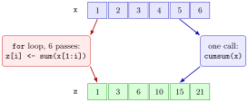

Loops versus Vectorization¶
Definition¶
Many calculations can be written in two ways in R:
- as a loop that visits the elements one at a time and computes the result step by step, or
- as a vectorized expression: one call of an operator or built-in function that works on the whole vector, such as
x * y,sum(x),cumsum(x),colSums(X)orifelse(test, yes, no).
Both give the same numbers. The vectorized version is shorter and, for built-in functions, usually much faster, because the element-by-element work happens inside compiled code. Functions such as lapply(X, FUN), which applies FUN to every element of a list or vector X and returns a list, make repetition more concise, but they are not automatically faster than a for loop.
Interpretation¶
Choosing between a loop and a vectorized call is choosing between spelling out each step and naming the whole operation. A loop shows exactly what happens in each pass; a built-in like cumsum(x) states the intention in one word and leaves the steps to R.

The figure compares the two routes for the cumulative sums of Example 1. On the left, a for loop fills a pre-allocated vector z slot by slot in six passes; on the right, cumsum(x) produces the same six numbers in one call. The output is identical; what differs is the amount of code and the speed for long vectors.
How to choose: if a built-in function or a vectorized operation already does the job, use it, as with sum(x * y) for an inner product or mean(x[x %% 2 == 0]) for the mean of the even values. A loop is the better tool when a step depends on the result of the previous step in a way no built-in captures, when the number of steps is not known in advance (a while loop that runs until convergence), or when a few lines of loop are simply clearer to you and your reader.
The expression sum(x * y) is the inner product of two vectors of equal length: x * y multiplies element-wise, and sum() adds the products.
A common mistake is reading x * y itself as the inner product; it is the vector of products, and the sum still has to be taken.
Key Results¶
- A loop and the matching vectorized call return the same values; check with
==,all.equal()oridentical(). - Built-in vectorized functions (
sum,cumsum,colSums,ifelse, arithmetic operators) are usually faster than an equivalent loop written in R. lapply(X, FUN)returns a list with one result per element ofX; it shortens the code but is not automatically faster than a loop.- Loops remain the natural tool when each step depends on the previous one in a way no built-in covers, or when the number of steps is unknown.
identical()also compares types: a loop that fillsrep(0, n)produces doubles, whilecumsum(1:6)returns integers.
Examples¶
1. Cumulative sums. The loop from the for loop page and the built-in:
x <- 1:6
z <- rep(0, length(x))
for (i in 1:length(x)) {
z[i] <- sum(x[1:i])
}
z
#> [1] 1 3 6 10 15 21
cumsum(x)
#> [1] 1 3 6 10 15 21
z == cumsum(x)
#> [1] TRUE TRUE TRUE TRUE TRUE TRUE
identical(z, cumsum(x))
#> [1] FALSE
The values agree, but identical() says FALSE: z started as rep(0, 6), a double vector, while cumsum() of the integers 1:6 is an integer vector.
2. An inner product. Pairing x[i] with y[i]:
x <- 1:5
y <- 11:15
s <- 0
for (i in 1:length(x)) {
s <- s + x[i] * y[i]
}
s
#> [1] 205
x * y
#> [1] 11 24 39 56 75
sum(x * y)
#> [1] 205
3. A conditional mean. The mean of the even numbers in 1:10, by loop and by logical subsetting:
x <- 1:10
total <- 0
count <- 0
for (i in x) {
if (i %% 2 == 0) {
total <- total + i
count <- count + 1
}
}
total / count
#> [1] 6
mean(x[x %% 2 == 0])
#> [1] 6
The loop needs two accumulators and a condition; the vectorized version selects the even values (remainder 0 after division by 2) and averages them.
4. Repetition with lapply(). Summing every element of a list:
The result is again a list, with the same names as the input.
Prerequisites¶
Related Concepts¶
Sources¶
- Programming for EOR · Week 3
- Lecture 3, Part 1 Loops and Control Flow, sections "Repeated Operations using Loops", "Looping by index" and "4. When not to loop"; Lecture 3, Part 2 Functions and Recursion, section "Nested function calls"
Aliases: vectorisation, vectorization, avoid loops, cumsum, cumsum(), lapply, lapply() Keywords: loop or built-in function, cumsum(), lapply(), clarity versus brevity Symbols: sum
Last updated: 10 November 2026 16:43
Loops versus Vectorizationfor LoopVectorized OperationsSummary Statistics in RVectorized ifelse()Logical SubsettingWriting FunctionsListwhile LoopInner Product